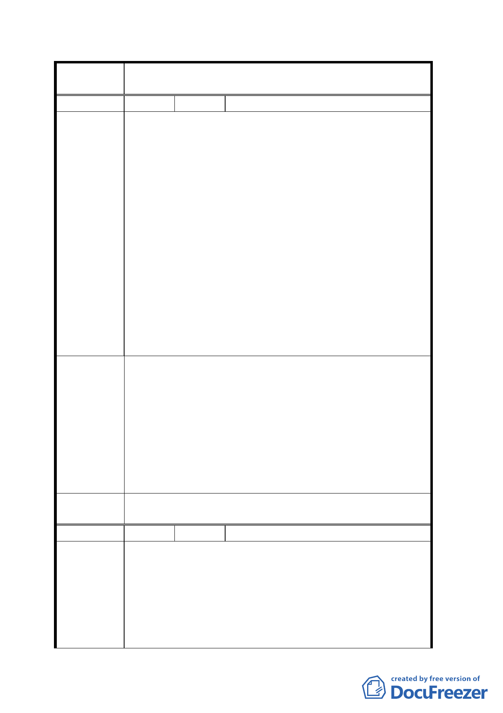

案
名
變更臺北市文山區萬隆段二小段瀝青拌合場用地及住宅區
（專案國宅用地）為學校用地計畫案
編 號 ２ 陳情人 樓琦庭
一、教育局於歷次社區說明會中，均未對居民提出詳盡之
文心中學（中途學校）設校計畫與校地選址評估報告，
原瀝青拌合場是否為全臺北市最佳之校址？令人質
疑。
二、北市都市計畫中已編定之學校用地（預定地）是否均
不適合設置文心中學（中途學校）？未見評估。
三、惇敘高工應較適合文心中學（中途學校）設校地點。
陳情理由
四、基地現址舊稱「溪仔口」，為先民開發文山、石碇地區
自新店溪上岸舊址，具大臺北地區開發史之空間價
值，現僅存此區可供「再現」市民共同之空間記憶。
五、基地位於新店溪與景美溪交會處，有條件創造成為市
民之親水空間。
六、九十三年二月四日本案都市計畫用地變更說明會流
會，未完成都市計畫法定程序。
七、教育局聲稱地方居民已無反對意見，與事實不符，違
背行政誠信原則。
一、呈請退回本案，請教育局另依設校條件，重新評估校
址，並以惇敘高工與現有都市計畫中學校預定地優先
評選之。
二、依據都市發展局委託珍宇環境規劃工作室所擬之「景
建議辦法
慶里地區發展計畫」，本案基地宜劃為公園用地，供社
區以現有建物設置社區文化會館（兼活動中心），並提
供都市戶外開放空間，供市民親水與休憩使用，藉以
維護都市生態，請建議都市發展局依循居民參與之方
式，評估與規劃本案。
擬建議處理
意見
同意撤回計畫案。
編 號 ３ 陳情人 陽光哈佛二期社區管理委員會
一、中途學校「文心中學」欲設置於人口密集之住宅區旁，
且該處已列為臺北市政府警察局文山二分局列為治安
陳情理由
重點區域在案；雖美名為學校，實為「少年觀護所」
級之嫌惡設施用地，且未見相關決策單位提供任何公
正單位之環境影響評估計畫給予周圍鄰里居民，僅以
口頭說明欲回饋周圍居民游泳池、停車場等公共設
施，顯見臺北市政府教育局及都市發展局以預知其為
五